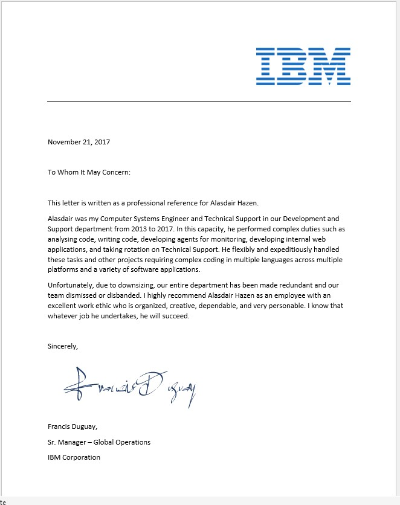

IBM Global via Artech
Title: DEVELOPMENT ENGINEER (CONSULTANT via Artech)Employed From: Jul 2011 – Nov 2017
Supervisor: Francis Duguay
Address: 3600 Steeles Ave E, Markham, ON L3R 9Z7, Canada
Phone: +1 800-426-4968
_____________________________________________

Duties Included (but not limited to):
- Created agents for various software and hardware monitoring
- 24x7 Technical Support (L1-L2)
- Created Internal Web based application for monitoring
- Installing software and verifying that systems are functioning correctly.
- Installing updates/patches and verifying that systems are functioning correctly.
- Creating and Maintaining documentation and Provide training to end users.
- Working with end users to diagnose and resolve problems.
- Determining steps to be taken in order to correct problems.
- Provide customer service with patience and respect to achieve total customer satisfaction.
- Maintaining records of all calls and solutions performed.
- Developed internal website to facilitate ease of use for Technical Support.
- Developed internal "self-healing" program to eiminate 90% of 1st level on-call support.
- Perform installation, administration, management, configuration, testing, and integration tasks related to the Event Management System (EMS).
- Develop shell and perl scripts to facilitate automated tasks.
- Produce standard documentation such as System Design Procedures (SDP), Engineering Design Procedures (EDP), Techniques Tactics and Procedures (TTP), and Standard Operating Procedures (SOP).
- Experience with EMS tools; including architecture, installation, configuration, and administration Experience with tools in an enterprise environment
- Good understanding of integrations, protocols, data flow, and databases
- Good understanding of industry standards and best practices i.e., Information Technology Infrastructure Library (ITIL), Information Technology Service Management (ITSM), Tivoli Framework, Netcool product suites
- Strong background with Linux and Windows operating systems, Solaris, SuSe Linux and servers
- Scripting and programming languages including Perl, Shell Scripting, VBScript, HTML, CGI, PHP, Python, javascript, and more
- Specialized experience with the IBM Tivoli Netcool Suite Omnibus, Probes, WebGUI, WebSphere, Jazz, ITM, ITNM, Impact, TCR, TBSM and DB2
- Event management rules development, performance threshold management, event analysis desiredEducation
- Develop monitoring rule base, programs and scripts within UNIX environment Performancetuning of monitoring products, specifically optimizing database queries fromthe rule base.
- Requirements gathering, analysis, design and implementation of new monitoring solutions for devices, appliances or custom applications in the Client environment.
- Tier 2/3 support for NetCool production system issues.
- Perform troubleshooting, pager rotation; follow production impacting issues toresolution in an efficient manner. Implement upgrades and/or patches to theexisting NetCool environment.
- Registration and evaluation of new products, versions or patches in accordance to companystandards and processes.
- Evaluation and enhancement of NetCool environment with emphasis on more effective andefficient processing, event reduction and process optimization.